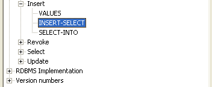

Use INSERT to add rows to:
|
Syntax of the SQL statement |
|
INSERT INTO base-table-name [( column [, ... ])] VALUES ( insert-value [, ... ]) ; |
|
INSERT INTO base-table-name [( column [, ... ])] subquery ; |
|
SELECT expression [, ...] INTO variable FROM [table-part] WHERE search-condition GROUP BY expression[, ... ] ORDER BY expression[, ... ] HAVING expression[, ... ] ; |
Too see which of these three forms of inserting values are supported, look it up in the ODBC Info tree under 'SQL Supported standard / Insert'.

Note: Some databases do support the select-into form, but with a different format with the "INTO" part after the 'HAVING' clause. The advantage of this non-standard form of SQL is that the SELECT statement in itself can be reused more easily. The Firebird/Interbase databases have this form of SQL.
See also: DELETE , SELECT , UPDATE